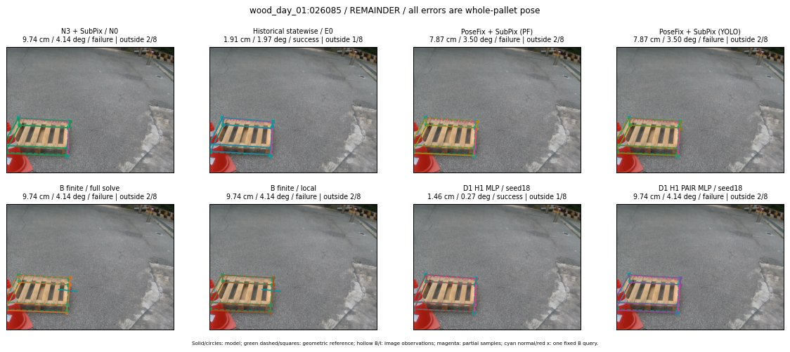

Whole-pallet pose errors; reference is a fixed geometric annotation, not certified physical GT.

Scores are uncalibrated logits. N0 retention is a numerical pose alias; it differs from H0 none or B fallback. B/I and profiles in baseline/B panels are original observations; L panels use new D1 observations. Only one deterministic supported B query is shown in a thumbnail; full support counts are below. Grey privacy rectangles edit the display copy only and are unrelated to O states; all observations were measured on original pixels. Thumbnails use JPEG quality85; detailed scientific panels are PNG.
| Method | Whole pose / cm, deg | Actual source | Selected ID | Score | Archived candidates | Eligible | N0 retained | H0 none | Fallback | Finite profiles |
|---|---|---|---|---|---|---|---|---|---|---|
| Raw YOLO + F | 9.16 cm / 4.56 deg / failure | OTHER | None | N/A | N/A | N/A | False | N/A | None | N/A |
| N3 + SubPix / N0 | 9.74 cm / 4.14 deg / failure | N0 | None | N/A | N/A | N/A | True | N/A | None | N/A |
| Historical statewise / E0 | 1.91 cm / 1.97 deg / success | E0_REGENERATED | None | N/A | N/A | N/A | False | N/A | False | N/A |
| PoseFix raw | 9.12 cm / 3.23 deg / failure | OTHER | None | N/A | N/A | N/A | False | N/A | None | N/A |
| PoseFix + SubPix (PF) | 7.87 cm / 3.50 deg / failure | OTHER | None | N/A | N/A | N/A | False | N/A | False | historical support records 9; finite audit N/A |
| PoseFix + SubPix (YOLO) | 7.87 cm / 3.50 deg / failure | OTHER | None | N/A | N/A | N/A | False | N/A | False | historical support records 9; finite audit N/A |
| Historical L, seed18 | 9.74 cm / 4.14 deg / failure | N0 | N0 | N/A | 69 | 69 | True | True | True | N/A |
| Historical B fixed bank | 1.46 cm / 0.27 deg / success | OTHER | G10/ORIGINAL_WD/sample/1 | N/A | N/A | N/A | False | N/A | False | N/A |
| Historical B full | 1.98 cm / 1.75 deg / success | OTHER | NEW/B/ORIGINAL_WD/h0/LOGGED/G13/ORIGINAL_WD/outline_consider/37/PROPOSED_NATIVE_YAW_0 | N/A | N/A | N/A | False | N/A | False | N/A |
| Historical edge full | 11.61 cm / 9.28 deg / failure | OTHER | NEW/edge/ORIGINAL_WD/h1/G10/ORIGINAL_WD/sample/11/PROPOSED_NATIVE_YAW_1 | N/A | N/A | N/A | False | N/A | False | N/A |
| Historical AB full | 1.98 cm / 1.75 deg / success | OTHER | NEW/AB/ORIGINAL_WD/h0/LOGGED/G13/ORIGINAL_WD/outline_consider/37/PROPOSED_NATIVE_YAW_0 | N/A | N/A | N/A | False | N/A | False | N/A |
| B finite / fixed bank | 9.74 cm / 4.14 deg / failure | N0 | N0 | N/A | N/A | N/A | True | N/A | True | N/A |
| B finite / full solve | 9.74 cm / 4.14 deg / failure | N0 | N0 | N/A | N/A | N/A | True | N/A | True | N/A |
| B finite / local | 9.74 cm / 4.14 deg / failure | N0 | N0 | N/A | N/A | N/A | True | N/A | True | N/A |
| Edge finite / full solve | 9.74 cm / 4.14 deg / failure | N0 | N0 | N/A | N/A | N/A | True | N/A | True | N/A |
| D0 H0 MLP / seed18 | 9.74 cm / 4.14 deg / failure | N0 | N0 | 2.8779618740081787 | 33 | 33 | True | True | True | N/A |
| D0 H0 MLP / seed19 | 9.74 cm / 4.14 deg / failure | N0 | N0 | 3.3184657096862793 | 33 | 33 | True | True | True | N/A |
| D0 H0 MLP / seed20 | 9.74 cm / 4.14 deg / failure | N0 | N0 | 0.10520513355731964 | 33 | 33 | True | True | True | N/A |
| D0 H1 MLP / seed18 | 1.46 cm / 0.27 deg / success | OTHER | WD0/ORIGINAL_WD/selected | -1.2321116924285889 | 33 | 33 | False | False | False | N/A |
| D0 H1 MLP / seed19 | 1.46 cm / 0.27 deg / success | OTHER | WD0/ORIGINAL_WD/selected | -1.1543325185775757 | 33 | 33 | False | False | False | N/A |
| D0 H1 MLP / seed20 | 1.46 cm / 0.27 deg / success | OTHER | WD0/ORIGINAL_WD/selected | -2.6516075134277344 | 33 | 33 | False | False | False | N/A |
| D1 H0 MLP / seed18 | 9.74 cm / 4.14 deg / failure | N0 | N0 | 7.402873992919922 | 33 | 33 | True | True | True | N/A |
| D1 H0 MLP / seed19 | 9.74 cm / 4.14 deg / failure | N0 | N0 | 7.041289806365967 | 33 | 33 | True | True | True | N/A |
| D1 H0 MLP / seed20 | 9.74 cm / 4.14 deg / failure | N0 | N0 | 6.49757194519043 | 33 | 33 | True | True | True | N/A |
| D1 H1 MLP / seed18 | 1.46 cm / 0.27 deg / success | OTHER | WD0/ORIGINAL_WD/selected | -0.08057418465614319 | 33 | 33 | False | False | False | N/A |
| D1 H1 MLP / seed19 | 1.46 cm / 0.27 deg / success | OTHER | WD0/ORIGINAL_WD/selected | -0.46492940187454224 | 33 | 33 | False | False | False | N/A |
| D1 H1 MLP / seed20 | 1.46 cm / 0.27 deg / success | OTHER | WD0/ORIGINAL_WD/selected | -0.45292291045188904 | 33 | 33 | False | False | False | N/A |
| D1 H1 ROLE AFFINE / seed18 | 9.74 cm / 4.14 deg / failure | N0 | N0 | -0.07798901945352554 | 33 | 33 | True | False | False | N/A |
| D1 H1 ROLE AFFINE / seed19 | 9.74 cm / 4.14 deg / failure | N0 | N0 | -0.07757237553596497 | 33 | 33 | True | False | False | N/A |
| D1 H1 ROLE AFFINE / seed20 | 9.74 cm / 4.14 deg / failure | N0 | N0 | -0.10349895060062408 | 33 | 33 | True | False | False | N/A |
| D1 H1 PAIR MLP / seed18 | 9.74 cm / 4.14 deg / failure | N0 | N0 | -1.4542433023452759 | 33 | 2 | True | False | False | N/A |
| D1 H1 PAIR MLP / seed19 | 9.74 cm / 4.14 deg / failure | N0 | N0 | -1.1268564462661743 | 33 | 2 | True | False | False | N/A |
| D1 H1 PAIR MLP / seed20 | 9.74 cm / 4.14 deg / failure | N0 | N0 | -0.8377801179885864 | 33 | 2 | True | False | False | N/A |
| D1 H1 PAIR ROLE AFFINE / seed18 | 9.74 cm / 4.14 deg / failure | N0 | N0 | -0.5157996416091919 | 33 | 2 | True | False | False | N/A |
| D1 H1 PAIR ROLE AFFINE / seed19 | 9.74 cm / 4.14 deg / failure | N0 | N0 | -0.43201568722724915 | 33 | 2 | True | False | False | N/A |
| D1 H1 PAIR ROLE AFFINE / seed20 | 9.74 cm / 4.14 deg / failure | N0 | N0 | -0.4967772960662842 | 33 | 2 | True | False | False | N/A |
| Regenerated common E0 | 1.91 cm / 1.97 deg / success | E0_REGENERATED | E0_REGENERATED | N/A | N/A | N/A | False | N/A | False | N/A |